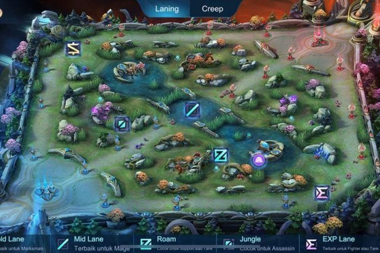
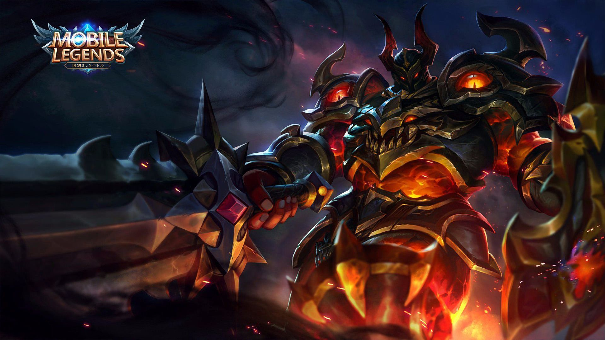
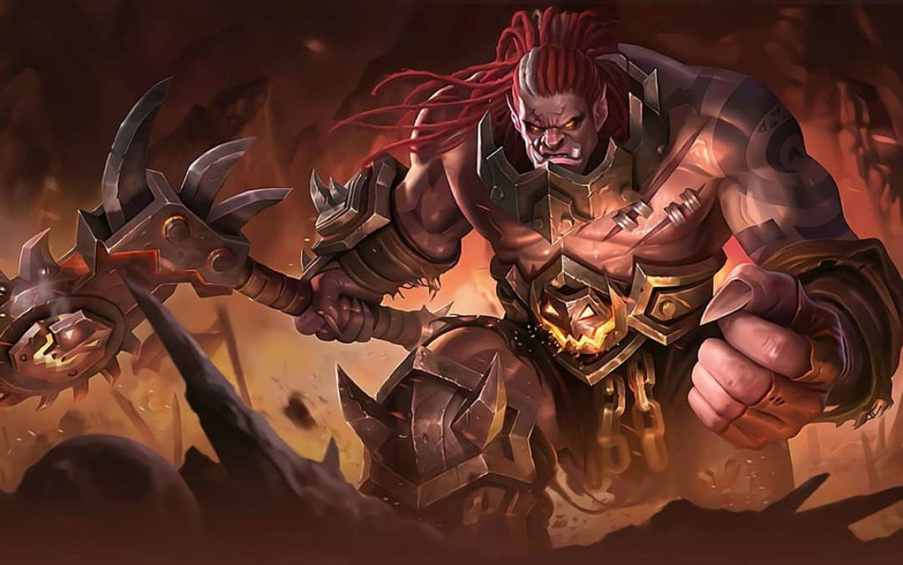
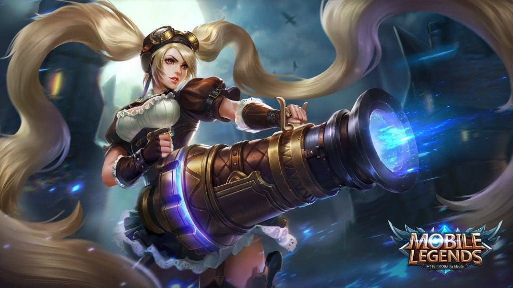
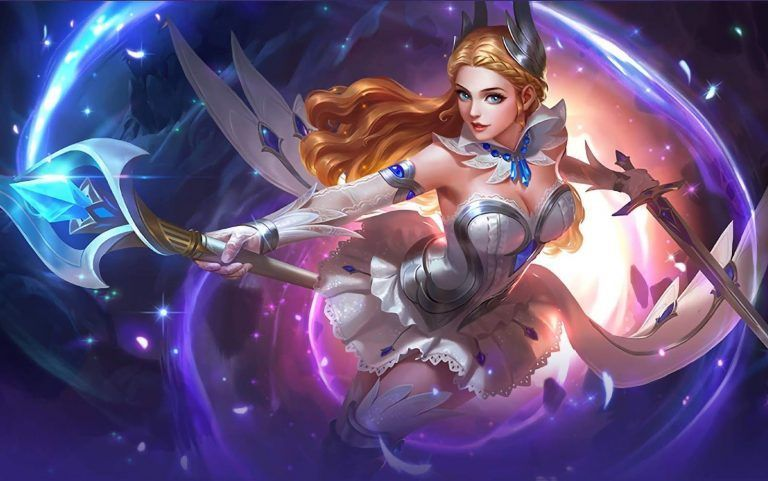
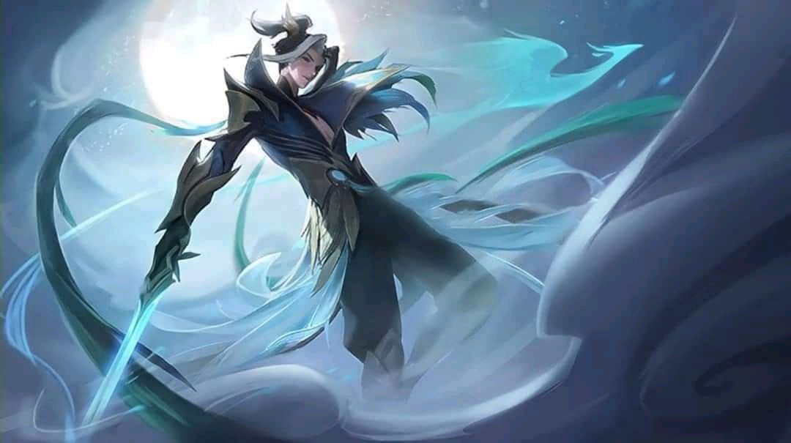

ROLE dalam mobile legend
1. Tanker
Tank atau tanker adalah satu karakter yang ada di dalam game ini.
Role ini memiliki tugas sebagai tameng bagi tim
yang dapat melindungi pemain lain dalam permainan.
Tank sendiri memiliki tugas yang krusial dimana role ini
harus gaya permainan sebagai playmaker karena mereka harus memiliki
isnting yang kuat untuk melakukan inisiasi.

2. Offlaner
Offlaner adalah role yang memiliki tugas bermain di sisi
exp laner dan sering diisi oleh hero tank atau fighter.
Pada role ini pemain akan bertugas sebagai pengatur
jalannya wave minion yang ada di dalam permainan.
Untuk role ini pemain dituntut untuk pandai membaca kondisi
pada keseluruhan map untuk menentukan langkah apa yang sebaiknya diambil.

3. Goldlaner
Goldlaner adalah satu role yang didesain untuk menjadi mesin pembunuh di dalam pertarungan.
Role ini sering diisi oleh hero assasin, marksman atau fighter.
Pada role ini pemainnya harus fokus untuk melakukan
farming pada wave minion hingga menit kelima untuk melengkapi item-nya.

4. Support
Role support adalah satu role yang memiliki tugas untuk membantu pertahanan sekaligus penyerang.
Role ini sering diisi oleh hero mage yang memiliki damage
besar atau kemampuan crowd control yang mematikan.
Pada role ini pemain harus pandai membaca situasi dalam permainan
karena peran yang dimiliki bisa menjadi penentu kemenangan dalam permainan.

5. Jungler
Role ini tergolong baru di dunia Mobile Legends saat ini.
Jungler memiliki tugas untuk mengambil obyektif jungler dari awal
permainan hingga akhir dalam hal ini adalah buff, turtle dan lord.
Tidak sampai disitu, Jungler juga memiliki peran sebagai ganker dalam permainan.
Pada role ini pemain harus pandai membaca situasi dan memiliki rotasi yang dapat menguntungkan tim.
Jungler saat ini sering diisi oleh hero marksman, assasin dan fighter.
